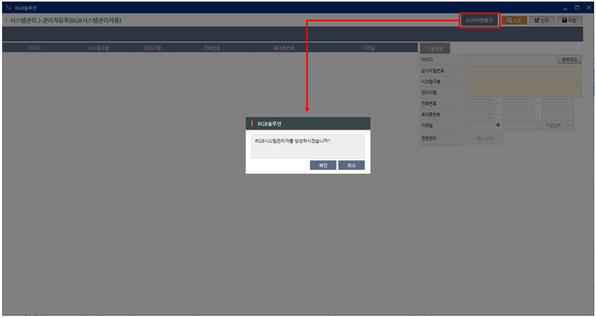
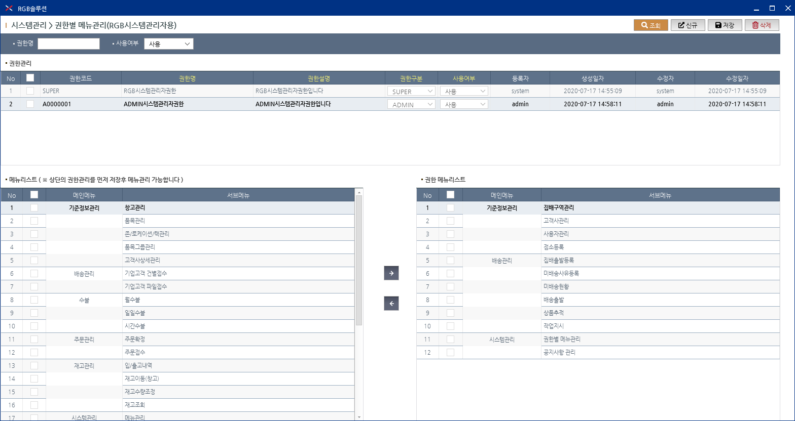
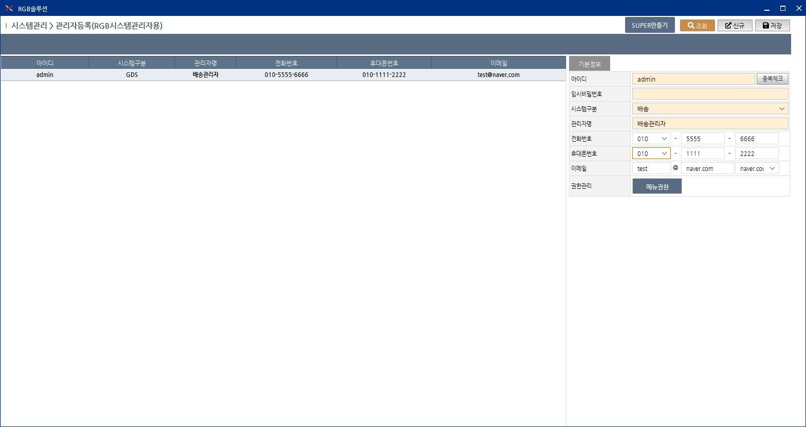
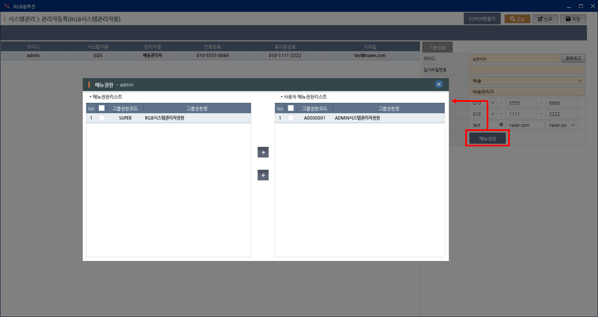

2. 데이터베이스 서버구성후 첫번째 할 일은 SUPER관리자 정보 만들기!
SUPER관리자는 RGB시스템관리자용으로 모든권한을 가지고 있습니다.
메뉴로 등록된 화면이 아니기 때문에 개발자가 넥사크로 화면("SYST_MNG_0010")을 실행하여 작업합니다.

> "SUPER만들기" 버튼을 클릭하면 confirm창이 나타나며 확인버튼을 클릭하면 SUPER관리자정보가 생성되며 기본정보는 다음과 같습니다
> 아이디는 "super", 초기비밀번호는 "1111", 권한명은 "SUPER", 권한메뉴는 모든메뉴가 부여됩니다.
3. 다음은 ADMIN관리자가 관리할 메뉴권한 만들기!
업체에서 시스템관리자가 관리할 메뉴권한을 생성합니다.
메뉴로 등록된 화면이 아니기 때문에 개발자가 넥사크로 화면("SYST_MNG_0020")을 실행하여 작업합니다.

> 신규버튼을 클릭하고 상단의 권한관리 그리드의 헤더가 노란색인 항목에 정보를 입력하고 저장합니다. (※ 권한구분은 "ADMIN" 필수)
> 권한을 먼저 저장한 후 하단의 메뉴를 부여할 수 있으며 업체 시스템관리자가 관리할 메뉴를 체크하고 오른쪽으로 이동시킵니다.
> 권한코드는 자동 채번 → 'A' + 시퀀스(7자리, MAX+1)
4. ADMIN관리자계정을 만들고 앞서 만든 메뉴권한 부여하면 준비끝!
ADMIN관리자 계정은 업체의 시스템관리자용으로 SUPER시스템관리자가 부여한 권한을 가지고 있습니다.
메뉴로 등록된 화면이 아니기 때문에 개발자가 넥사크로 화면("SYST_MNG_0010")을 실행하여 작업합니다.


> 다른화면에서 코드필터링, 기능제한 등을 위해 계정 생성시 업체에 맞는 시스템구분(기초코드:SM1000)을 지정하여야 합니다.
> 계정을 생성한 후 메뉴권한 버튼을 클릭하면 나타나는 팝업창에서 앞서 만든 권한을 오른쪽으로 부여합니다.